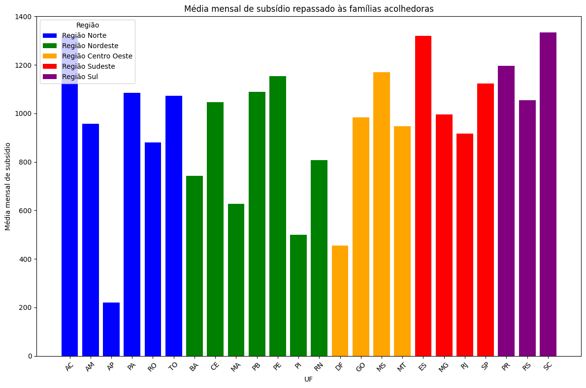

Variáveis relacionadas a subsídio#
import pandas as pd
import matplotlib.pyplot as plt
import seaborn as sns
df_dados_gerais = pd.read_csv('../data/familia_acolhedora/dados_gerais_tratado.csv')
df_dados_gerais.head()
| IBGE | NU_IDENTIFICADOR | municipio | uf | data_implementacao_unidade | Latitude | Longitude | natureza_unidade | custo_manutencao | servico_regulamentado | ... | coordenador_saf_situacao | capaci_equipe_tec_saf_presencial | capaci_equipe_tec_saf_ead | capaci_equipe_tec_saf_nao_faz | capaci_equipe_tec_saf_presencial_qtd | capaci_equipe_tec_saf_ead_qtd | IBGE7 | nome_da_uf | Regiao | Município | |
|---|---|---|---|---|---|---|---|---|---|---|---|---|---|---|---|---|---|---|---|---|---|
| 0 | 110011 | 1,10011E+12 | JARU | RO | 29/03/2023 | -10.439 | -62.466 | Governamental | NaN | Sim, por lei | ... | Exerce concomitantemente a função de coordenad... | Não | Não | Não | NaN | NaN | 1100114 | Rondonia | Região Norte | Jaru |
| 1 | 110012 | 1,10012E+12 | JI-PARANA | RO | 02/01/2022 | -10.876.486.067.028.500 | -619.596.290.588.379 | Governamental | NaN | Sim, por lei | ... | Exerce exclusivamente a função de coordenador(... | Sim | Sim | Não | 3.0 | 4.0 | 1100122 | Rondonia | Região Norte | Ji-Paraná |
| 2 | 110020 | 1,1002E+12 | PORTO VELHO | RO | 13/12/2017 | -915.359.258.390.788 | -643.068.141.967.022 | Governamental | NaN | Sim, por lei | ... | Exerce exclusivamente a função de coordenador(... | Sim | Sim | Não | 5.0 | 5.0 | 1100205 | Rondonia | Região Norte | Porto Velho |
| 3 | 120040 | 1,2004E+12 | RIO BRANCO | AC | 17/05/2013 | -9.948.852.227.687.540 | -6.785.414.814.949.030 | Governamental | NaN | Sim, por lei | ... | Exerce exclusivamente a função de coordenador(... | Não | Não | Sim | NaN | NaN | 1200401 | Acre | Região Norte | Rio Branco |
| 4 | 130170 | 1,3017E+12 | HUMAITA | AM | 28/12/2020 | -7.519.639.784.496.380 | -63.031.353.950.500.400 | Governamental | NaN | Sim, por lei | ... | Exerce exclusivamente a função de coordenador(... | Não | Não | Sim | NaN | NaN | 1301704 | Amazonas | Região Norte | Humaitá |
5 rows × 174 columns
df_dados_gerais.columns.tolist()
['IBGE',
'NU_IDENTIFICADOR',
'municipio',
'uf',
'data_implementacao_unidade',
'Latitude',
'Longitude',
'natureza_unidade',
'custo_manutencao',
'servico_regulamentado',
'ano_implementacao_servico',
'subsidio_valor_mensal',
'subsidio_itens_manutencao',
'subsidio_mobiliario_transporte',
'subsidio_isencao_imposto_taxa',
'subsidio_outros',
'subsidio_nao_repassa',
'subsidio_outros_quais',
'fam_aceita_vinculo_irmaos',
'qtd_criancas_acolhidas',
'qtd_criancas_acolhidas_12meses',
'qtd_masc_0_2',
'qtd_masc_3_5',
'qtd_masc_6_11',
'qtd_masc_12_13',
'qtd_masc_14_15',
'qtd_masc_16_17',
'qtd_masc_acima_18',
'qtd_masc_total',
'qtd_fem_0_2',
'qtd_fem_3_5',
'qtd_fem_6_11',
'qtd_fem_12_13',
'qtd_fem_14_15',
'qtd_fem_16_17',
'qtd_fem_acima_18',
'qtd_refugiados_imigrantes',
'qtd_venezuelanos',
'qtd_criancas_tempo_servico_menos_1mes',
'qtd_criancas_tempo_servico_1_3meses',
'qtd_criancas_tempo_servico_4_6meses',
'qtd_criancas_tempo_servico_7_12meses',
'qtd_criancas_tempo_servico_13_18meses',
'qtd_criancas_tempo_servico_19_24meses',
'qtd_criancas_tempo_servico_25_48meses',
'qtd_criancas_tempo_servico_49_72meses',
'qtd_criancas_tempo_mais_72meses',
'qtd_criancas_deficiencia',
'qtd_criancas_transt_sofri_psiquico',
'qtd_criancas_necessidade_especial',
'qtd_adoles_socioeducativo',
'qtd_criancas_traj_de_rua',
'qtd_criancas_indigenas',
'qtd_criancas_outros_povos_trad',
'qtd_criancas_dependencia_drogas',
'qtd_criancas_gestantes',
'qtd_criancas_pretas',
'qtd_criancas_pardas',
'qtd_criancas_brancas',
'qtd_criancas_amarelas',
'qtd_criancas_raca_indigenas',
'qtd_motivo_entrega_voluntaria_adocao',
'qtd_motivo_orfandade',
'qtd_motivo_abandono',
'qtd_motivo_pais_usuarios',
'qtd_motivo_pais_com_deficiencia',
'qtd_motivo_pais_transt_sofri_psiquicos',
'qtd_motivo_pais_ausentes_doenca',
'qtd_motivo_pais_prisao_ou_internacao',
'qtd_motivo_violencia_domestica_fisica',
'qtd_motivo_violencia_domestica_psicologica',
'qtd_motivo_abuso_sex_intrafamiliar',
'qtd_motivo_exploracao_sex',
'qtd_motivo_conflito_familiar',
'qtd_motivo_exploracao_trabalho',
'qtd_motivo_pais_cond_especif_saude',
'qtd_motivo_pais_s_condicoes_depend_quim',
'qtd_motivo_ameaca_morte',
'qtd_motivo_situacao_rua',
'qtd_motivo_negligencia_familia',
'qtd_motivo_fam_situacao_rua',
'qtd_motivo_fam_moradia_insalubre',
'qtd_motivo_fam_carencia_rec_materiais',
'qtd_oriundos_pbf',
'qtd_oriundos_fam_menos_1sm',
'divulgacao_outdoors_busdoors',
'divulgacao_materiais_grande_circ',
'divulgacao_radio_tv_impressa',
'divulgacao_eventos_palestras',
'divulgacao_redes_sociais',
'divulgacao_articulacao_liderancas',
'divulgacao_outros',
'divulgacao_nao_faz',
'divulgacao_outros_quais',
'ch_capacitacao_inicial',
'selecao_fam_reunioes',
'selecao_fam_analise_doc',
'selecao_fam_entrevistas',
'selecao_fam_visitas_domiciliares',
'selecao_fam_outros',
'selecao_fam_nao_faz',
'selecao_fam_outros_quais',
'capac_ini_conti_fam_encontros_grupos',
'capac_ini_conti_fam_encontros_indivi',
'capac_ini_conti_fam_paletras',
'capac_ini_conti_fam_rodas_conversa',
'capac_ini_conti_fam_outros',
'capac_ini_conti_fam_nao_faz',
'capac_ini_conti_fam_outros_quais',
'acompanhamento_fam_aprox_supervi',
'acompanhamento_fam_visitas_domicil',
'acompanhamento_fam_aten_psicoss',
'acompanhamento_fam_contato_tel',
'acompanhamento_fam_outros',
'acompanhamento_fam_outros_quais',
'ativi_sistematicas_atend_psicosso_indivi',
'ativi_sistematicas_escuta_qualific',
'ativi_sistematicas_acompanh_escolar',
'ativi_sistematicas_acompanh_saude',
'ativi_sistematicas_encaminhc_docs',
'ativi_sistematicas_encaminhc_qualif_prof',
'ativi_sistematicas_identifi_fam_nat_exten',
'ativi_sistematicas_viabili_encon_fam_ori',
'ativi_sistematicas_constr_plano_acomp_fam_ori',
'ativi_sistematicas_atend_psicosso_indiv_fam_ori',
'ativi_sistematicas_reunioes_fam_ori',
'ativi_sistematicas_entrevis_fam_ori',
'ativi_sistematicas_visi_domic_fam_ori',
'ativi_sistematicas_genograma_ecomapa',
'ativi_sistematicas_relat_trimes_judic',
'ativi_sistematicas_estudo_caso',
'ativi_sistematicas_encaminhc_rede',
'ativi_sistematicas_discuss_casos_rede',
'ativi_sistematicas_outros',
'ativi_sistematicas_nao_faz',
'ativi_sistematicas_outros_quais',
'retorno_fam_ori_fam_ado_judic_informa_decisoes',
'retorno_fam_ori_fam_ado_judic_nao_informa_decisoes',
'retorno_fam_ori_fam_ado_tempo_prepar_suficiente',
'retorno_fam_ori_fam_ado_tempo_prepar_insuficiente',
'freq_acompanh_fam_acolhedora',
'qtd_fam_processo_habilitacao',
'qtd_fam_aptas_ou_acolhendo',
'num_atual_fam_suficiente',
'imovel_sede_saf',
'espaco_fisico_sala_atendimento',
'espaco_fisico_espaco_reunioes',
'espaco_fisico_sala_equip_tec',
'espaco_fisico_sala_coord_adm',
'espaco_fisico_area_recepcao',
'espaco_fisico_copa',
'equipamentos_veiculo_exclusivo',
'equipamentos_veiculo_compartilhado',
'equipamentos_acervo_bibliog',
'equipamentos_mater_pedago',
'equipamentos_tel_fixo',
'equipamentos_cel',
'equipamentos_impressora',
'equipamentos_de_som',
'equipamentos_proj_imagens',
'equipamentos_bebedouro',
'equipamentos_comput_internet',
'equipamentos_qtd_comput_internet',
'equipe_tec_exclusiva_saf',
'coordenador_saf_situacao',
'capaci_equipe_tec_saf_presencial',
'capaci_equipe_tec_saf_ead',
'capaci_equipe_tec_saf_nao_faz',
'capaci_equipe_tec_saf_presencial_qtd',
'capaci_equipe_tec_saf_ead_qtd',
'IBGE7',
'nome_da_uf',
'Regiao',
'Município']
Variável de subsídio mensal repassado às famílias acolhedoras#
df_dados_gerais['subsidio_valor_mensal'].apply(type).unique()
array([<class 'float'>, <class 'str'>], dtype=object)
# Transformar os dados em números
df_dados_gerais['subsidio_valor_mensal'] = pd.to_numeric(df_dados_gerais['subsidio_valor_mensal'], errors='coerce')
df_dados_gerais.shape
(620, 174)
df_dados_gerais['subsidio_valor_mensal'].isna().sum()
np.int64(64)
df_nulos_subsidio = df_dados_gerais[df_dados_gerais['subsidio_valor_mensal'].isna()]
df_nulos_subsidio.head()
| IBGE | NU_IDENTIFICADOR | municipio | uf | data_implementacao_unidade | Latitude | Longitude | natureza_unidade | custo_manutencao | servico_regulamentado | ... | coordenador_saf_situacao | capaci_equipe_tec_saf_presencial | capaci_equipe_tec_saf_ead | capaci_equipe_tec_saf_nao_faz | capaci_equipe_tec_saf_presencial_qtd | capaci_equipe_tec_saf_ead_qtd | IBGE7 | nome_da_uf | Regiao | Município | |
|---|---|---|---|---|---|---|---|---|---|---|---|---|---|---|---|---|---|---|---|---|---|
| 0 | 110011 | 1,10011E+12 | JARU | RO | 29/03/2023 | -10.439 | -62.466 | Governamental | NaN | Sim, por lei | ... | Exerce concomitantemente a função de coordenad... | Não | Não | Não | NaN | NaN | 1100114 | Rondonia | Região Norte | Jaru |
| 8 | 130340 | 1,3034E+12 | PARINTINS | AM | 01/10/2017 | -26.331.842.224.955.400 | -56.737.711.429.595.900 | Governamental | NaN | Sim, por lei | ... | Exerce exclusivamente a função de coordenador(... | Não | Sim | Não | NaN | 4.0 | 1303403 | Amazonas | Região Norte | Parintins |
| 23 | 160010 | 1,6001E+12 | AMAPA | AP | 30/10/2023 | 20.520.089.817.919.700 | -50.792.090.892.791.700 | Governamental | NaN | Sim, por lei | ... | Exerce exclusivamente a função de coordenador(... | Sim | Não | Não | 3.0 | NaN | 1600105 | Amapá | Região Norte | Amapá |
| 36 | 210235 | 2,10235E+12 | BURITIRANA | MA | 01/01/2017 | -551.795.185.375.319 | -470.613.815.941.458 | Governamental | NaN | Sim, por lei | ... | Exerce exclusivamente a função de coordenador(... | Não | Não | Sim | NaN | NaN | 2102358 | Maranhão | Região Nordeste | Buritirana |
| 37 | 210330 | 2,1033E+12 | CODO | MA | 21/07/2017 | -4.462.538.556.340.480 | -4.388.851.014.038.660 | Governamental | NaN | Sim, por lei | ... | Exerce concomitantemente a função de coordenad... | Sim | Não | Não | 2.0 | NaN | 2103307 | Maranhão | Região Nordeste | Codó |
5 rows × 174 columns
df_nulos_subsidio['uf'].value_counts()
uf
PR 14
SP 11
SC 9
RS 6
MA 5
MG 4
BA 4
MT 2
MS 2
RN 1
AM 1
AP 1
RO 1
PB 1
RJ 1
GO 1
Name: count, dtype: int64
# Como há apenas 64 nulos em um universo de 620 linhas, atribuí 0 aos valores nulos, supondo que não há subsídio mensal - ainda que a resposta pode ter sido Não Sei
df_dados_gerais['subsidio_valor_mensal'].fillna(0, inplace=True)
/tmp/ipykernel_1979/4215733007.py:2: FutureWarning: A value is trying to be set on a copy of a DataFrame or Series through chained assignment using an inplace method.
The behavior will change in pandas 3.0. This inplace method will never work because the intermediate object on which we are setting values always behaves as a copy.
For example, when doing 'df[col].method(value, inplace=True)', try using 'df.method({col: value}, inplace=True)' or df[col] = df[col].method(value) instead, to perform the operation inplace on the original object.
df_dados_gerais['subsidio_valor_mensal'].fillna(0, inplace=True)
# Verificar os outliers
df_dados_gerais['subsidio_valor_mensal'].describe()
count 620.000000
mean 1283.346774
std 3370.194269
min 0.000000
25% 688.000000
50% 1320.000000
75% 1320.000000
max 79200.000000
Name: subsidio_valor_mensal, dtype: float64
# Calcular os quartis e o intervalo interquartil (IQR)
q1 = df_dados_gerais['subsidio_valor_mensal'].quantile(0.25)
q3 = df_dados_gerais['subsidio_valor_mensal'].quantile(0.75)
iqr = q3 - q1
# Determinar o limite superior para outliers
limite_superior = q3 + 1.5 * iqr
# Filtrar os outliers
outliers = df_dados_gerais[df_dados_gerais['subsidio_valor_mensal'] > limite_superior]
# Exibir o limite superior para referência
print(f"Limite superior para outliers: {limite_superior}")
Limite superior para outliers: 2268.0
# Atenção às observações acima de 13 mil, assim, melhor retirá-las do que inferir os valores, uma vez que são apenas 3 linhas
outliers[['municipio', 'uf', 'subsidio_valor_mensal']].sort_values(by='subsidio_valor_mensal', ascending=False)
| municipio | uf | subsidio_valor_mensal | |
|---|---|---|---|
| 219 | VILA VELHA | ES | 79200.0 |
| 381 | MARIOPOLIS | PR | 26400.0 |
| 469 | FLORIANOPOLIS | SC | 13000.0 |
| 218 | PEDRO CANARIO | ES | 2640.0 |
| 272 | PAULINIA | SP | 2640.0 |
| 505 | PERITIBA | SC | 2640.0 |
| 499 | NOVO HORIZONTE | SC | 2640.0 |
| 509 | POMERODE | SC | 2640.0 |
| 325 | CAFELANDIA | PR | 2369.0 |
# Filtrar para manter apenas valores iguais ou abaixo de 13000
df_sem_outliers = df_dados_gerais[df_dados_gerais['subsidio_valor_mensal'] < 13000]
# Verificar quantas linhas foram removidas
removidas = len(df_dados_gerais) - len(df_sem_outliers)
print(f"Total de outliers removidos: {removidas}")
Total de outliers removidos: 3
# Calcula a média por UF
media_por_uf_sem_outliers = df_sem_outliers.groupby(['uf', 'Regiao'])['subsidio_valor_mensal'].mean().reset_index()
media_por_uf_sem_outliers.sort_values(by='subsidio_valor_mensal', ascending=False)
| uf | Regiao | subsidio_valor_mensal | |
|---|---|---|---|
| 21 | SC | Região Sul | 1334.490385 |
| 0 | AC | Região Norte | 1320.000000 |
| 6 | ES | Região Sudeste | 1320.000000 |
| 16 | PR | Região Sul | 1195.407692 |
| 10 | MS | Região Centro Oeste | 1170.869565 |
| 14 | PE | Região Nordeste | 1153.875000 |
| 22 | SP | Região Sudeste | 1122.438596 |
| 13 | PB | Região Nordeste | 1089.285714 |
| 12 | PA | Região Norte | 1085.833333 |
| 23 | TO | Região Norte | 1072.500000 |
| 20 | RS | Região Sul | 1055.333333 |
| 4 | CE | Região Nordeste | 1046.000000 |
| 9 | MG | Região Sudeste | 996.708333 |
| 7 | GO | Região Centro Oeste | 984.375000 |
| 1 | AM | Região Norte | 957.142857 |
| 11 | MT | Região Centro Oeste | 946.666667 |
| 17 | RJ | Região Sudeste | 916.551724 |
| 19 | RO | Região Norte | 880.000000 |
| 18 | RN | Região Nordeste | 807.272727 |
| 3 | BA | Região Nordeste | 742.583333 |
| 8 | MA | Região Nordeste | 626.800000 |
| 15 | PI | Região Nordeste | 500.000000 |
| 5 | DF | Região Centro Oeste | 456.000000 |
| 2 | AP | Região Norte | 220.000000 |
# Define cores para cada região
cores_regiao = {
'Região Norte': 'blue', 'Região Nordeste': 'green', 'Região Centro Oeste': 'orange',
'Região Sudeste': 'red', 'Região Sul': 'purple'
}
# Cria o gráfico de barras
plt.figure(figsize=(12, 8))
for regiao, cor in cores_regiao.items():
subset = media_por_uf_sem_outliers[media_por_uf_sem_outliers['Regiao'] == regiao]
plt.bar(subset['uf'], subset['subsidio_valor_mensal'], label=regiao, color=cor)
# Configurações do gráfico
plt.title('Média mensal de subsídio repassado às famílias acolhedoras')
plt.xlabel('UF')
plt.ylabel('Média mensal de subsídio')
plt.xticks(rotation=45)
plt.legend(title='Região')
plt.tight_layout()
plt.show()

Demais variáveis de apoio/isenção destinado às famílias acolhedoras#
‘subsidio_itens_manutencao’: são disponibilizados itens para a manutenção da criança/adolescente acolhida (p.ex: fraldas, vestuário, alimentação, medicamentos, material escolar, dentre outros)
‘subsidio_mobiliario_transporte’: são disponibilizados itens de mobiliário e transporte para uso da criança/adolescente acolhida (p.ex: berço, carrinho de bebê, etc.)
‘subsidio_isencao_imposto_taxa’: há isenção de impostos ou taxas públicas (p.ex: IPTU, etc)
‘subsidio_outros’: há outros tipos de apoio não financeiro ou isenção
‘subsidio_nao_repassa’: não há outro tipo de apoio não financeiro ou isenção
‘subsidio_outros_quais’: quais são os outros tipos de apoio não financeiro ou isenção
df_dados_gerais['subsidio_itens_manutencao'].apply(type).unique()
array([<class 'float'>, <class 'str'>], dtype=object)
df_dados_gerais['subsidio_itens_manutencao'].value_counts()
subsidio_itens_manutencao
Sim 156
Não 71
Name: count, dtype: int64
df_dados_gerais['subsidio_mobiliario_transporte'].value_counts()
subsidio_mobiliario_transporte
Não 141
Sim 86
Name: count, dtype: int64
df_dados_gerais['subsidio_isencao_imposto_taxa'].value_counts()
subsidio_isencao_imposto_taxa
Não 176
Sim 51
Name: count, dtype: int64
df_dados_gerais['subsidio_outros'].value_counts()
subsidio_outros
Não 203
Sim 24
Name: count, dtype: int64
df_dados_gerais['subsidio_nao_repassa'].value_counts()
subsidio_nao_repassa
Sim 393
Não 227
Name: count, dtype: int64
colunas_subsidios = ['subsidio_itens_manutencao', 'subsidio_mobiliario_transporte', 'subsidio_isencao_imposto_taxa', 'subsidio_outros', 'subsidio_nao_repassa']
df_dados_gerais[colunas_subsidios].isna().sum()
subsidio_itens_manutencao 393
subsidio_mobiliario_transporte 393
subsidio_isencao_imposto_taxa 393
subsidio_outros 393
subsidio_nao_repassa 0
dtype: int64
# Como há valores nulos nas variáveis e, como não há informação se é Não, a melhor forma é filtrar as colunas para contar apenas Sim e Não, ignorando os NaNs
freq_df = df_dados_gerais[colunas_subsidios].apply(lambda x: x.value_counts(dropna=True)).T
# Plotando o gráfico
plt.figure(figsize=(10, 6))
sns.heatmap(freq_df[['Sim', 'Não']], annot=True, cmap='Blues', cbar=False, fmt='d')
plt.title('Tipo de apoio para famílias acolhedoras')
plt.xlabel('Resposta')
plt.ylabel('Variáveis')
plt.show()

df_dados_gerais['subsidio_outros_quais'].value_counts()
subsidio_outros_quais
Incentivos através de descontos em bens e serviços em empresas privadas para famílias acolhedoras 1
alimentação, quite higiene 1
Beneficio Eventual 1
Benefícios Eventuais, quandoa avaliada a necessidade 1
Só no 1º mês do acolhimento - Suporte alimentar ofertado pelos CRAS, 1
Bolsa Natalina 1
Amparo com transporte aos agendamentos na rede, transporte para as visitas 1
Benefício Eventual, cartão alimentação conforme avaliação da equipe técnica, 1
auxilio alimemtação 1
O município da suporte através do beneficio eventual (cesta básica), roupas, itens de higiene, be 1
dependendo da complexidade da deficiência a família recebe meia bolsa auxilio a mais 1
O acolhimento de crianças, adolescentes, idosos e pessoa com deficiência com demandas específicas 1
pagamento quando há acolhidos 1
Consultas particulares e compra de medicamentos de uso contínuo que não são fornecidos pelo SUS, 1
transporte das crianças para os atendimentos 1
itens para atendimento inicial até o repasse do subsidio 1
cesta basica 1
No caso de criança PcD, 50% a mais do subsídio, 1
Bolsa-Auxílio 1
As famílias recebem incentivo de meio saláriofixo mensal, independente de ter criança em acolhime 1
Descanso anual sem perda do subsidio 1
1/2 SALÁRIO MÍNIMO PARA FAMILIAS ACOLHEDORAS 1
AUXILIO ALIMENTAR 1
Prioridade nas matriculas em CMEIs e escolas 1
Name: count, dtype: int64